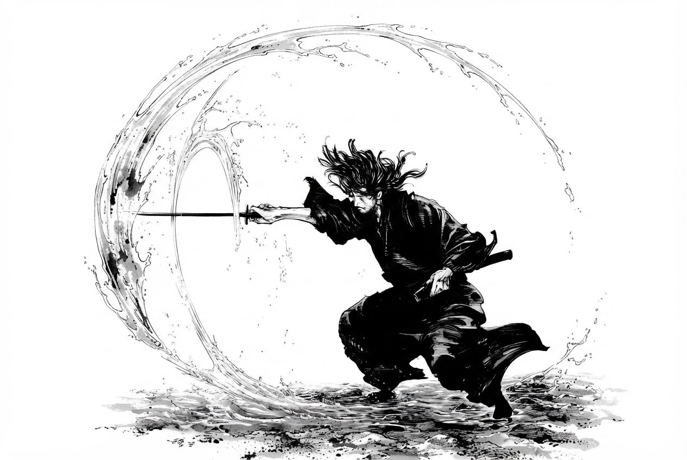
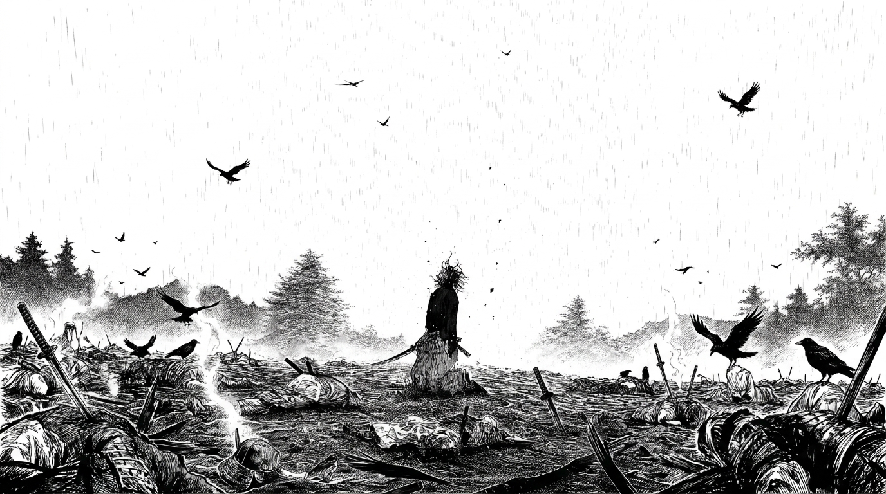
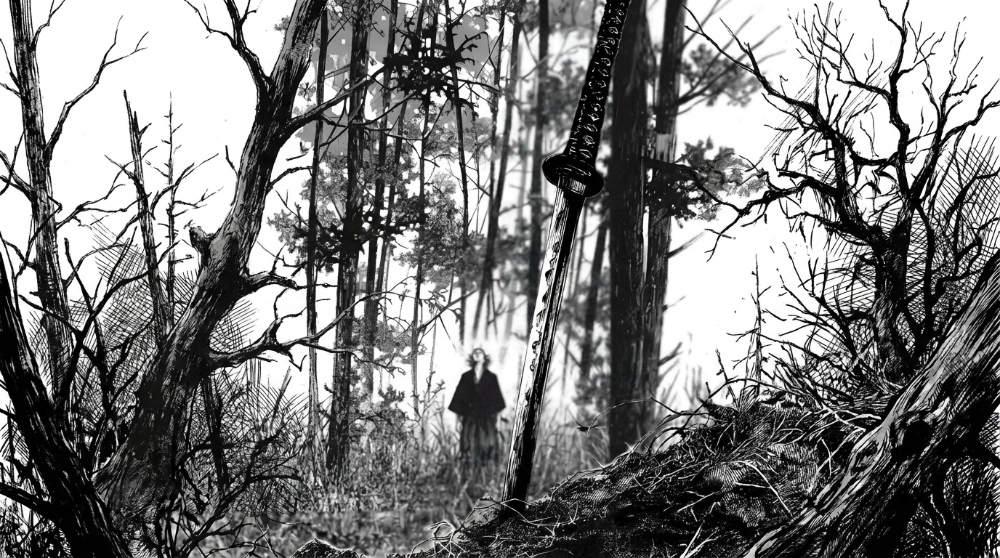

Musashi
The sword as a burden
Musashi carried the sword as proof of his worth. Every encounter became a test he believed he had to survive.

A visual study of Miyamoto Musashi
The path from violence to understanding
What does it truly mean to be strong?
Prologue
Born as Shinmen Takezō, he survived through anger, instinct, and violence. Every battle moved him closer to becoming invincible, yet further from understanding why he desired strength in the first place.
01
The Beast
.png)
Before Musashi existed, there was Takezō—a young man who treated the world as an enemy. He believed that hesitation meant death and kindness created weakness.
His violence was not only ambition. It was protection against fear, rejection, and the feeling that his life had no value.


02
Fear

Musashi entered battle believing aggression could overcome anything. When he faced an opponent beyond his understanding, instinct was no longer enough.
For the first time, he experienced fear without being able to hide it beneath anger.
Fear was not the enemy. Refusing to understand it was.
03
The silence between battles

Musashi gradually stopped seeing the world only as a battlefield. He began studying distance, rhythm, water, trees, wind, animals, and the movement of people.
Strength was no longer limited to attacking first. It became the ability to observe clearly before acting.


To understand the sword, he first had to understand the world around it.
04
The other path
Musashi
Musashi carried the sword as proof of his worth. Every encounter became a test he believed he had to survive.
Kojirō
Kojirō represents a freer path—one built around instinct, expression, and joy rather than the need to prove superiority.
Add a Sasaki Kojirō image here.
They followed different roads toward the same horizon.
05
Invincible under the sun

Musashi pursued the title of the strongest because he believed it would give his life meaning. But each victory created another opponent, another fear, and another reason to continue fighting.
He slowly began to understand that invincibility was an illusion created by the ego.
Then
Now
The desire to become invincible was another form of captivity.
06
The endless path

Musashi’s journey is not powerful because he defeats skilled warriors. It is powerful because every battle removes another illusion about himself.
The path that began with violence slowly became a search for harmony, responsibility, connection, and peace.
Return to the beginningThe path of the sword became the path toward understanding life.